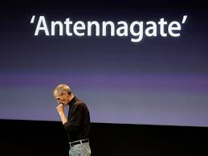

Apple's Antenna Gate
Apple's Antenna Gate was a significant failure following the launch of the iPhone 4 in 2010. Users reported that holding the phone in a certain way would cause signal loss. This issue sparked widespread media coverage and criticism, leading Apple to hold a press conference to address the problem. Although the situation seemed dire, Apple's response—offering free cases to mitigate the issue—showed their commitment to customer satisfaction. The company ultimately learned valuable lessons about quality control and customer feedback. In the long run, the incident reinforced the importance of thorough product testing before launch. Apple’s ability to navigate this failure helped solidify its reputation as a resilient and customer-oriented brand. The iPhone 4 remains one of Apple's best-selling devices, demonstrating that failure can lead to innovation and improvement. Antenna Gate also reminded tech companies about the importance of addressing user concerns transparently.
Microsoft's Windows Vista

Windows Vista was launched in 2007 with much anticipation but quickly became known as a failure. Users complained about its slow performance, heavy system requirements, and compatibility issues with existing software. The operating system's extensive security features were often more of a hindrance than a help, frustrating users. Microsoft faced backlash from both consumers and businesses, leading to a significant decline in its reputation. In response, Microsoft learned from the shortcomings of Vista and focused on improving user experience for its next operating system, Windows 7. Windows 7 was released in 2009 and received much praise for addressing the flaws of Vista. This experience taught Microsoft the importance of user feedback and adaptability. Vista's failure ultimately shaped the future direction of Microsoft's software development. It emphasized that understanding user needs is vital for success in the tech industry.
Segway's Market Failure
The Segway Personal Transporter, launched in 2001, was hailed as a revolutionary invention that would change urban transportation. Despite its innovative design and technology, the Segway failed to achieve widespread adoption. Factors contributing to its market failure included its high price, limited practicality, and regulatory restrictions. The public perception of the Segway also struggled, often viewed as a novelty rather than a serious mode of transportation. Additionally, the emergence of alternative personal mobility devices overshadowed its potential. Although the Segway is still used in niche markets and tours, it never reached the mainstream success anticipated. Segway’s journey serves as a cautionary tale for inventors about the importance of market research and understanding consumer behavior. The company ultimately pivoted towards addressing specific markets, focusing on short-distance travel. This transition highlighted the need for adaptability in the face of failure. Segway’s experience has influenced the design and marketing of personal transportation devices that followed.